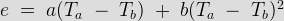
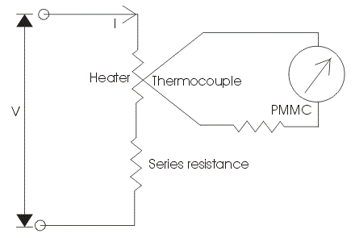
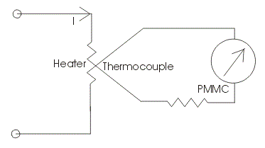
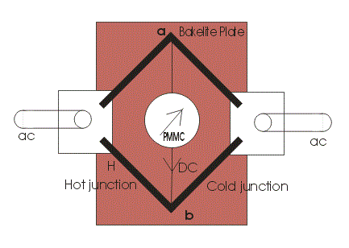

Before We introduce you about thermocouple type instrument in detail. We should first know the meaning of term thermocouple. Basically thermocouple consists of two different metals which are placed in contact with each other as shown in the diagram.
Thermocouple
Now we will look how the temperature difference is mathematically related to generated emf at the junction in thermocouple type of instruments. Let us consider temperature of the heater element be Ta and the temperature of cold metal be Tb. Now it is found that the generated emf at the junction is related to temperature difference as:

Where a and b are constant whose values completely depends upon the type of metal we are using. The above equation represents parabolic function. The approximated value of a is from 40 to 50 micro volts or more per degree Celsius rise in temperature and value of constant b is very small and can be neglected if the air gap field of permanent magnet moving coil is uniform. Thus we can approximate the above temperature emf relation as e = a(Ta - Tb), here we have assume b = 0. The electric current flowing through the heater coil produces heat as I2R where I is the root mean square value of current, if we assume the temperature of cold junction is maintained at room temperature then the rise in the temperature of the hot junction will be equal to temperature rise at the junction. Hence we can write (Ta-Tb)is directly proportional to I2R or we can say (Ta - Tb) = kI2R. Now the deflection angle x in moving coil instrument is equal to; x = Ke or x = K[a(Ta - Tb)] hence we can write k.K.a.I2R = k1I2, where k1 is some constant. From the above equation we see that the instrument shows the square law response.
Construction of Thermocouple Type Instrument
Now let us look at the construction of Thermocouple type Instruments. Broadly speaking the thermocouple type of instruments consists of two major parts which are written below:
(a) Thermo electric elements: The thermocouple type of instruments consists of thermo electric elements which can be of four types:
(1) Contact type: It has a separate heater which is shown in the diagram.
|  |  |
The action of thermocouple type instruments can be explained briefly as,
(A) At the junction the electrical energy is being converted to thermal energy in the heater element. A portion of the heat is transferred to the hot junction while most of the heat energy is dissipated away.
(B) The heat energy which is transferred to hot junction is again converted to electrical due to Seebeck effect. Only a portion of electrical energy is converted into mechanical energy which is used to produce a deflecting torque. The overall efficiency of the system is low thus the instrument consumes high power. So there is a requirement of highly accurate and sensitive dc instrument.
(2) Non contact type: In non contact type there is insulation between the heating element and the thermocouple i.e. there no direct contact between two. Due to this these instruments are not much sensitive as compared contact type.
(3) Vacuum thermo-elements: These types of instruments are mostly employed for the measurement of electric current at very high frequency of the order of 100 Mega hertz or more as these instruments retain their accuracy even at such high frequency.
(4)Bridge type: These bridges are manufactured on the ac ratings usually from 100 mili amperes to 1 amperes. In this two thermocouple are connected to form a bridge which is shown in the figure given below:

There is no requirement of heating element, the electric current which directly passing through the thermocouple raises the temperature which is directly proportional to the I2R losses. The bridge works on balanced condition at which there will be no electric current in the arm ab. The connected meter will show the potential difference between the junctions a and b.
Advantages of Thermocouple Type Instruments
Following are advantages of Thermocouple type of instruments,
(1) The thermocouple type of instruments accurately indicates the root mean square value of electric current and voltages irrespective of the waveform. There is a wide varieties of range of thermocouple instruments are available in the market.
(2) Thermocouple type of instruments give very accurate reading even at high frequency, thus these types of instruments are completely free from frequency errors.
(3) The measurement of quantity under these instruments is not affected by stray magnetic fields.
(4) These instruments are known for their high sensitivity.
(5) Usually for measuring the low value of electric current bridge type of arrangement is used i.e. ranging from 0.5 amperes to 20 amperes while for measuring the higher value of electric current heater element is required to retain accuracy.
Disadvantages of Thermocouple Type Instruments
Instead of many advantages these type of instruments posses one disadvantage,
The over load capacity of thermocouple type of instrument is small, even fuse is not able to the heater wire because heater wire may burn out before the fuse blows out.
 by
by